2020年の今は貨物といえば貨物ターミナル間のコンテナ輸送ばかりですが、 1985年頃までは各駅で貨物扱いがあり、各駅を出発した形さまざま、積み荷さまざまな貨物が操車場で行き先ごとに 振り分けられながら目的地へ向かっていました。
有蓋車はいわゆる屋根付き貨車で、記号は「ワ」です。 2軸貨車は15t積みの「ワム」系列が主な系列だったようでたくさんの形式があります。 さらに17t積みのワラ1、パレット貨車のワム80000などがありました。
荷主は貨車を1両単位で契約します。個人用倉庫に車輪がついて移動すると考えると合ってる気がします。 ヤード継走方式が廃止になり貨車余剰になった頃、国鉄から払い下げた貨車が各地で倉庫として使われていましたが、 そりゃ倉庫として使えるわけです。
このほか屋根付き貨車には鉄製有蓋車「テ」、家畜車「カ」、通風車「ツム」等がありますが、 またページを分けて紹介しようと思います。
パレット積み有蓋車、パワムです。
製造は意外と旧く1960年から、蒸気機関車にもよくけん引されています。 後期(昭和50年以降)に製造された車両は走行安定性を上げるために軸距が伸ばされ、見た目もやや変化しました。 私は黒い貨物列車はほとんど見ることがなかった世代なのですが、 ワム80000だけは飯田町置かれたり入れ換えをしていたりして、いつもたくさん見ていました。
旧くからKATOの機関車に合わせて大きな車体にした貨車が発売されていて、 いまだに最後の現役選手(?)です。 トミックスは香港製のあと、何度かのリニューアルを経て現在に至ります。
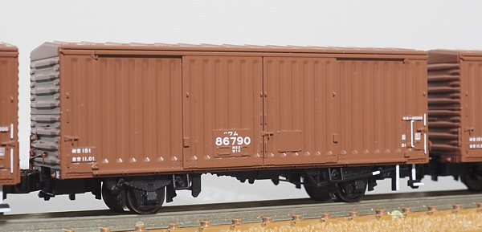
模型はトミックスのリニューアル品で、東北本線一般貨物列車セットに含まれるものと単品の寄せ集めです。
床下を塗装しています。茶色→黒の順序で全体を吹き付け塗装の後(黒は若干薄めにして下地が見えるようにします)、 台車付近には赤さび色、上面・下面からダークアースを軽く吹き付けています。 側ブレーキのリンクも追加したのですが、ワム80000は車軸に重なってしまいほとんど目立ちません。
構内作業係用の手すり・側ブレーキ関係には白を色入れしています。 妻面の側ブレーキ標識も成型で表現されているので、白を入れています。
ワム90000の次に製作された15t積み有蓋車。 1958年～1960年に掛けて5710両が製作されました。 屋根・妻板もプレス製となりますが、リベットで組み立てられていてやや古い雰囲気も残します。
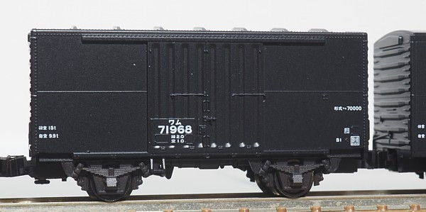
大量に連結されたワラ1とかワム90000とかの丸屋根に混じって連結されると三角屋根が目立ち、 貨物列車の編成に変化をつけられることから両数が少ない割に早くからNゲージでは各社から製品化されていて、5社から出ているそうです。 この車両はトミックスのものです。
東北本線一般貨物列車セットの整備に合わせて床下や構内作業係用手すりに色入れしました。 トミックスの車両は軸箱・側ブレーキの周りが立体的でよいですね。 KATOはサスペンションが組み込まれているのですが、そのため軸箱が厚く側ブレーキ周りがやや平面的です。
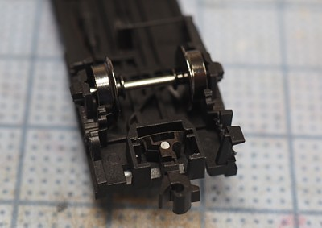
ミニカーブレール対応のトミックス貨車にかもめナックルを取り付けています。 もとのカプラーの支柱をカットし、φ0.8の柱を新たにたててかもめナックルをつけます。 もとの板ばねはそのまま復元ばねとして使用可能です。
色気をだしてマグネマティックの解放・遅延解放もトライしてみたのですが、解放はなんとかできたものの 復元やナックルの閉じが悪く、いまいち安定しませんでしたので諦めました。 今のところ、マグネマティックナックルカプラーを使う場合にはKATOのカプラーポケットごと取り付けています。
番号が小さくなりますがワム70000に続いて製作された15t積み有蓋車。 1961年～1963年に掛けて8580両が製作されたそうです。 屋根は丸屋根となり、リベットはなくなり全て溶接で組み立てられています。
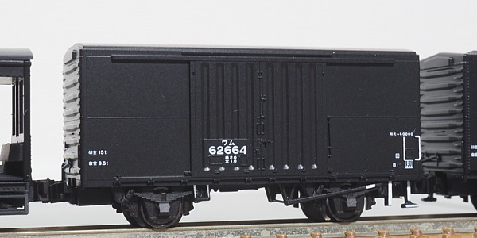
大量にいたワラ1と形態が似ていて、大きさくらいでしか区別がつかないことから 模型的には不遇で、2021年になってトミックスからようやく「まともなワム60000」が発売されました。
私はこの車両目当てで東北本線一般貨物列車セットを購入してます。(やられてる) よくできており期待通りワラ1とそっくりです。
床下に、側ブレーキテコからのリンクをφ0.3真鍮線で追加しています。 この角度から見るとよく目立ちますね。
私鉄乗り入れのために小さくつくられていた従来の2軸貨車に対して 車体を車両限界いっぱいまで拡張し、17t積みを実現した有蓋車。 1961年からなんと17,367両が製造されています。
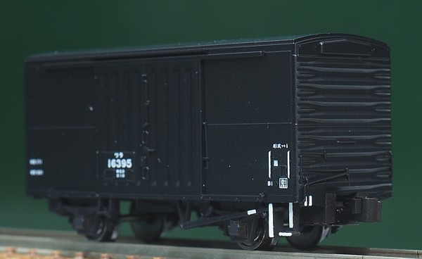
貨物列車にはたいがい連結されており、古くはトミックスの香港製貨車、それの金型を使ったGM/河合商会がありました。 KATOの製品化は2000年前後でしたっけか。気が付いたら何度も再生産されてますね。
この模型はトミックス(KATOも持ってるのですが未加工…)。 KATOより後発ですが、やはり2軸貨車の初期の発売。当時の仕様はレム5000・ワム80000中期型 ともども側ブレーキの棒が床板から伸びた板で表現されているため床下におおきな衝立があるみたいです。 ちょっと表現が重いので、板を削ってから真鍮線で改めて棒を追加しました。
ワム23000の短軸にした車両です。車軸の在庫処分で製作されたので両数は1158両と貨車としては少数派です。
のちに2段リンク化され1980年頃まで生き残りました。
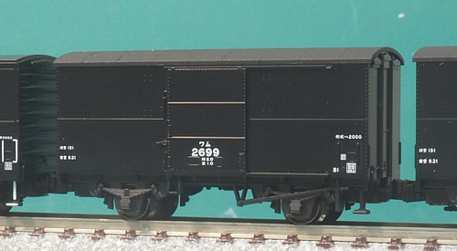
模型としてはワム90000と全く同じ車体となるわけで…(Nゲージは軌間がオーバースケールなため短軸・長軸は表現できません)。 相変わらず東北本線一般貨物列車セットに入ってたものですが、トミックスはよくこんな車両に目を付けたものだと。
ワ10000、ワム50000などと同じく屋根をキャンパス風に塗装しています。 こちらはキャンパスの継ぎ目もいい感じに目立ってるかなとは思うのですが、どうでしょう。
15t積みの2軸貨車で、設計的にはワム23000の走り装置を2段リンク化したものです。
分類はとても複雑なのですが、超ざっくり分けると90000番台はワム90000として新造された車両、 123000番台はワム23000を2改造したものになってます。 製造初年は1953年で、製造量数は19000両くらいあります。 (90000番台が3395両、123000番台が15617両、by wikipedia)
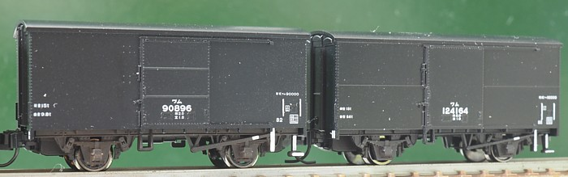
左がKATO、右がトミックスです。 いずれも床下を塗装後、側ブレーキ周りに白を入れました。 KATOの側ブレーキ周りはかなりデフォルメされた表現ですが、まぁ30年ちかく前の模型ですので…。
寸法を測ってみるとほとんど同じサイズなのですが、 なぜかKATOのワム90000のほうがずんぐりむっくりに見えます。 なんでなんでしょう。
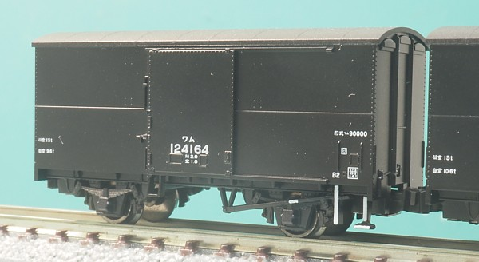
トミックスはワム23000を2段リンク化改造したグループをモデルにしています。 ワム23000からの改造車は、改造に際してもとの番号に単に100000を足すように附番されました。 初期の車両は扉にリブがなかったそうで、リブ付きとリブなしの両方が発売されてます。 こちらはリブなしのタイプ。
屋根は木製の屋根に屋根布(キャンバス)を貼った構造で、オハ35などと同じです。
鋼板屋根になっているワラ1, ワム60000などと連結されている写真をみると違いが目立つのですが
模型はつるつるになってしまってますので、塗装しました。
サーフェーサー500と黒を混ぜた下塗りでざらざら下地を作り、その上に黒を塗ってます。
下塗りの塗料だけで最初は仕上げようと思ったのですがややグレーになってしまい、写真を見てたら
真っ黒なのが多かったので結局黒を塗りました。
そして、屋根布の継ぎ目も表現しています。
塗装前にサーフェーサーで凸部を作る工法と、塗装後に更に凸部を追加で塗る方法を試したのですが
結果が大して変わらなかったので楽な塗装後にやる方法にしました。
寸法ですが、両端が4.5mm、そこから5.5mmを内側に向かって3枚貼り、中央はそれに合わせて調整します。
両端は妻面のキャンバス押さえに巻き込む分短くなってるのではないかなと。
手間はとてもかかるのですが、なにせ元はのっぺりした何もない屋根、 何もないのとは全然違う仕上がりになります。 写真でもわずかにわかる、遠くから見るとわからないこの感じが再現したかったのです。 客車でもこの加工をするとかっこいいと思うのですが沼になりそうなのでまだ我慢…。
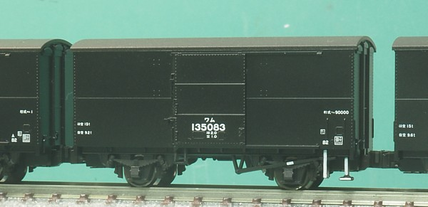
こちらは扉にリブがついた一般的?なタイプです。 おそらくこちらのほうが圧倒的に数が多いはずなのですがなぜか在籍車両はリブなしが一般的という模型あるある。 リブ付きも買い足そうかと…(沼)
側ブレーキテコの軸は真鍮線で追加しています。
10t積みの有蓋車。戦後不況の時期、1955-1956年に荷主からの要望 (貨車は契約が1両単位、荷重と料金が対応するためなので小口の輸送でワムを使うとコスパが悪い)により製造されました。 ワ10000は走り装置が1段リンク式、ワ12000が2段リンク式として登場しています。 製造数はそれぞれ500両です。
ワ10000ものちに2段リンクに改造されてます。 ツム1→ツム1000, カ2000→カ3000みたいにワ10000を改造してワ12000に編入、ではなく改造に対して番号はそのままです。 このあたりになるとルールがあるんだかないんだかよくわかりません。
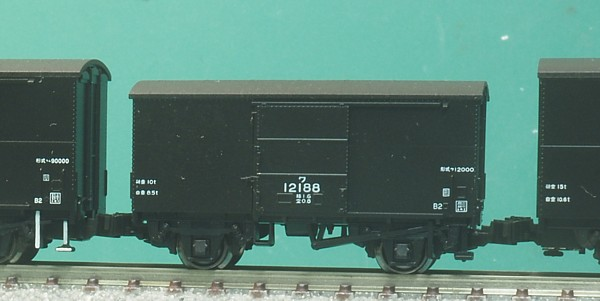
KATOから発売されました。両側をワム90000にして撮影してるのですが背の高さの差がこんな感じ、です。 屋根には屋根布を表現したシボと、継ぎ目の表現がついてるのでそのまま…ではなく、 艶消し黒で塗装しました。ついでにゲートの跡も削ってます。
車軸が車端に寄ってるためちょっと飛び出してるカプラーはカプラーポケットの爪を1mm程度(約半分)切り取って 後ろにオフセットして取り付けて連結面間隔を短縮してます。床下の塗装はまだですが、これからやります。
ワム23000の戦時設計車で、車体外板を省略し木板となっています。 製造量数は3565両。 後年走り装置を2段リンク化するとともに羽目板だった側板を合板に交換しました。 意外と長生きし、1985年に形式消滅しているそうです。
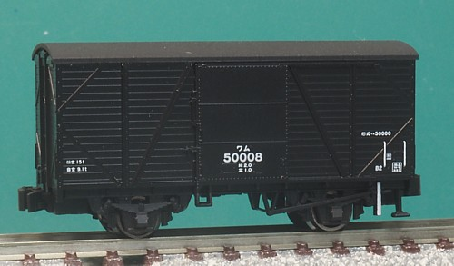
トミックスからいきなり(?)発売されました。 2013年頃だったようですが、蒸気機関車をC57(しかも135号機と1号機)しか出してなかったトミックスはけん引機がなかったような…。 と思うのですが、ヨ5000とともに京都鉄道博物館のお土産向けなのかもしれませんね。
下回りを塗装、側ブレーキ関連に白を入れています。 ステップと側ブレーキテコの白は、入っている車両と 入っていない車両があり塗ったほうが良いのだか塗らないほうが良いのだかよくわかりませんでした。 時代によって差異があり旧い資料になるほど塗られていないものが増えるようにも感じられたので、 1両だけ塗っておきました。
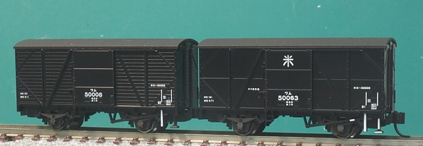
更にオリジナルタイプ(羽目板)と合板に交換した後の姿の2タイプ。 現役時代のD51とか9600とかによく似合う貨車かと思います。
屋根はキャンパスに、サーフェーサーで下地を作った後で艶消し黒で塗装。 キャンパスの継ぎ目も表現したのですが表現が薄めでこの車両は目立ってません。 とはいえこのくらいがちょうどよいのかも。